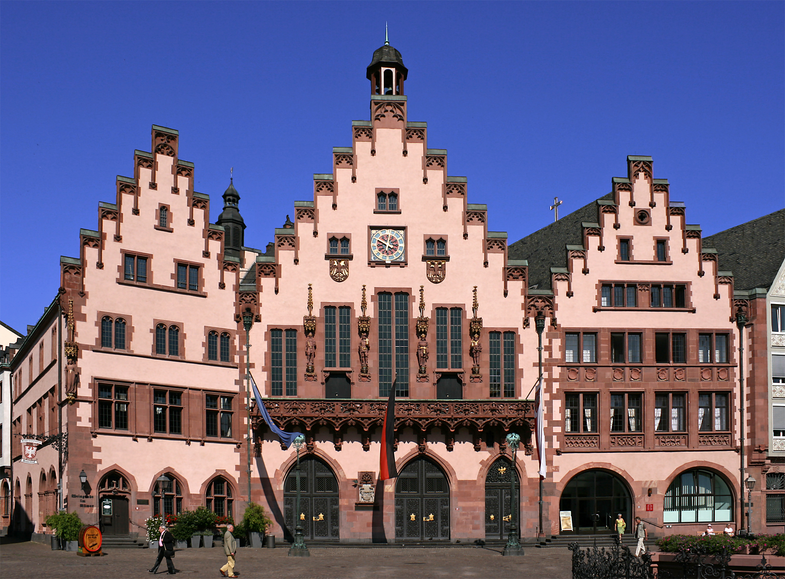

Der Tag
17. Dezember 2026
Donnerstag
Im Kalender vormerkenWir sagen Ja
Ein Ja zueinander.
Ein besonderer Tag mit euch.
FÜR IMMER BEGINNT MIT UNS
ZWEI MENSCHEN. EIN GEMEINSAMER WEG.
Eine Einladung von Herzen
Liebe Familie, wir heiraten! Diesen besonderen Moment möchten wir mit den Menschen teilen, die uns am nächsten stehen. Wir laden euch herzlich ein, bei unserer standesamtlichen Trauung in Frankfurt am Main dabei zu sein.
Alina Alijaj & Kevin Klaus Rabe
17. Dezember 2026
Donnerstag
Im Kalender vormerkenUm halb eins am Mittag beginnt unsere standesamtliche Trauung.
Wird noch bekanntgegeben.
Was ihr an diesem Tag tragen könnt, verraten wir euch bald hier.

FRANKFURT AM MAINHier beginnt unser nächstes Kapitel
Trauort: Römer
Römerberg · 60311 Frankfurt am Main
Im historischen Römer geben wir uns das Ja-Wort. Wir freuen uns darauf, diesen Moment gemeinsam mit euch zu erleben.
Anfahrt in Google Maps Informationen der Stadt zum TrausaalDas Schönste an diesem Tag
Die wichtigsten Details findet ihr immer hier.
Wir freuen uns auf einen unvergesslichen Tag mit euch.
Alina & Kevin
17 · 12 · 2026 12:30 Uhr